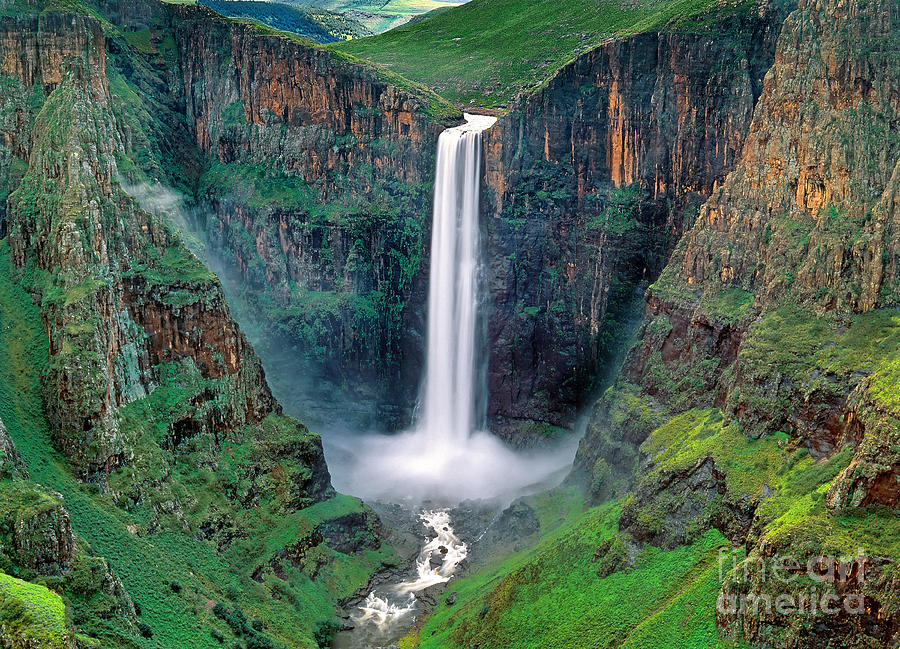
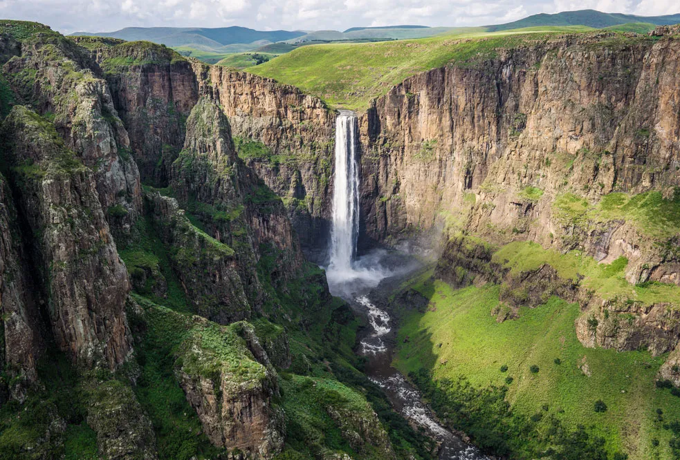
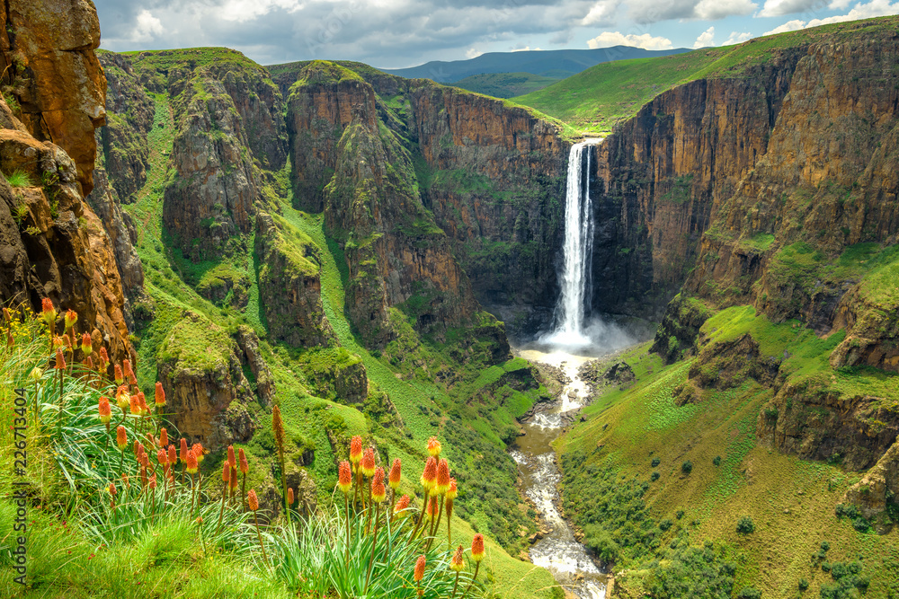

Maletsunyane Falls is one of the highest single-drop waterfalls in Africa, located near Semonkong in Lesotho. It is known for its dramatic cliff drop and powerful water flow.



Tourists can enjoy hiking, abseiling (world’s longest commercial abseil), and scenic photography.